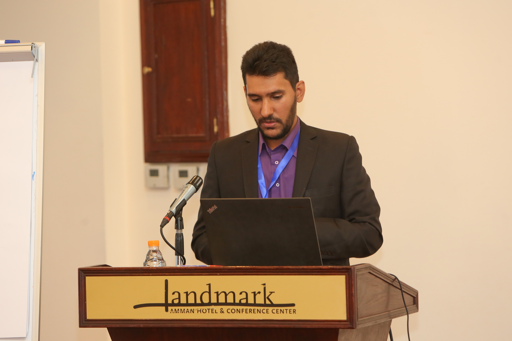
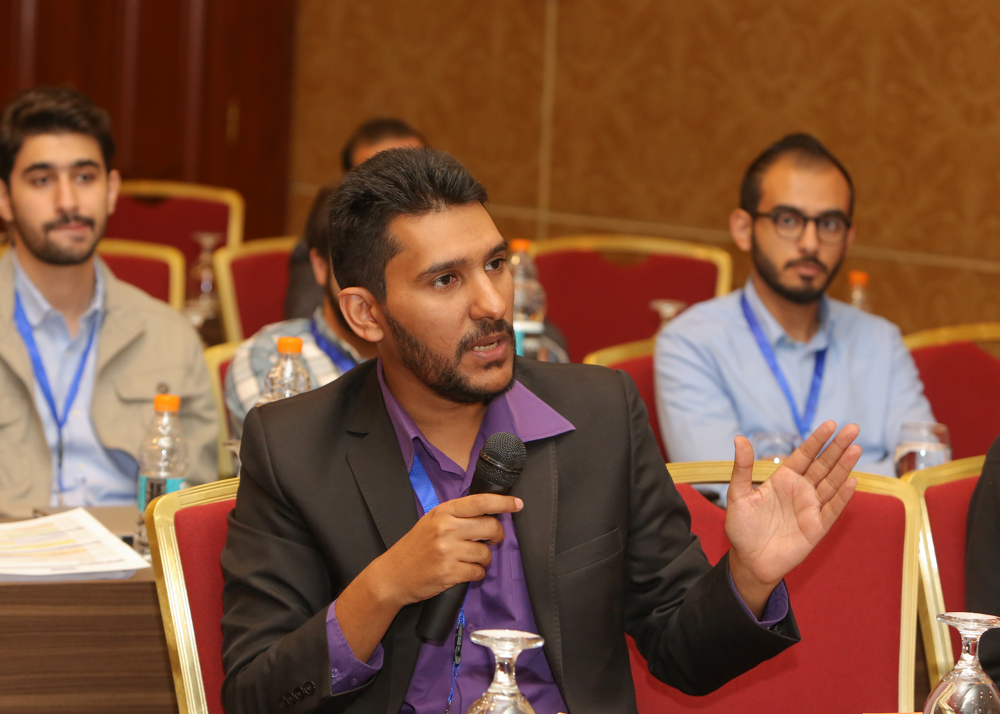
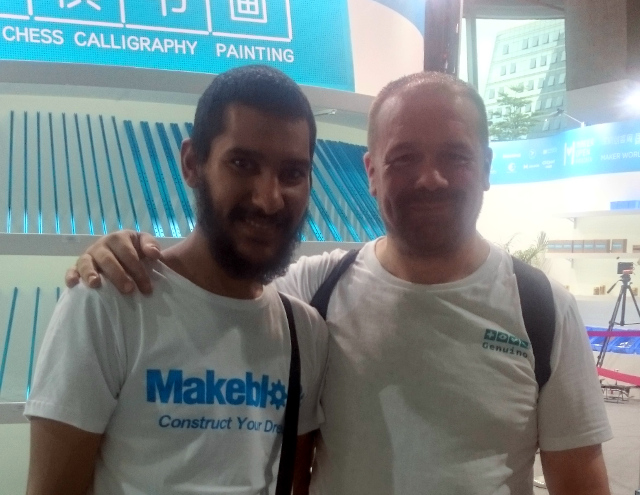
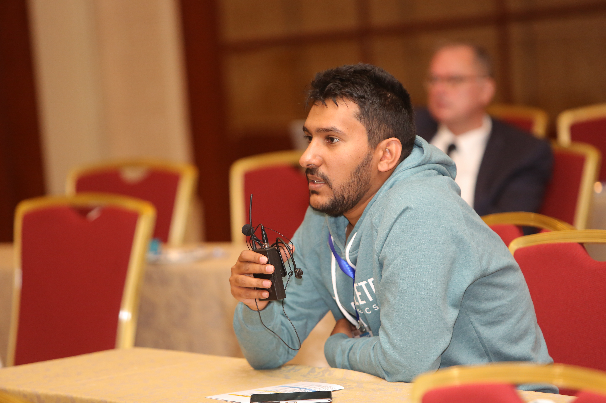

I lead engineering where search, recommendation, data and the platform under them meet.
Search. Ranking and information retrieval for the classifieds marketplace.
Recommendation. Developed and improved across the product.
Data. Data-intensive systems applied to product problems.
Platform. The infrastructure that runs those capabilities at scale.

Amman. September 2015 to the present.
podman-compose
I founded it in 2019 and still maintain it. Standard Compose files run on Podman, so a team keeps the stack it already has and drops the root-owned daemon. It now sits in the official containers organization, beside Podman, Buildah and Skopeo.
The Docker shirt and the red hat. Podman is Red Hat’s daemonless container engine.
Sent upstream
A limit found in production, a fix sent upstream, and a write-up other teams can use. Patches sent by mail do not all show up as pull requests.
Docker, 2015. A flat switch-root design for multi-stage builds, moby #15271, close to what shipped in 17.05.
NGINX, 2012. Weighted ip_hash after the list had called it impossible. Ticket #144 shipped in 1.3.1.
wasmtime-py, 2023. Copying between Python and WebAssembly became 400× faster.

The full list, with every patch, is below.
Research
15 citations on Google Scholar. M.Sc. in computer science, Princess Sumaya University for Technology, 2015–2018, grade Excellent. B.Sc. in mathematics, the Hashemite University, 2000–2004, grade Excellent.
Vision Advanced Systems. Technical manager, July 2014 – July 2015. Teams in Jordan and Egypt, plus infrastructure and support, still in the code.
Jeeran. October 2010 – August 2014. Database officer and core developer, promoted to Chief Engineer.
Consulting. Around 2015, on my own and inside a client’s team.
Arabic, native. English, the language of the patches.
Write, or call
90 public repositories and 261 GitHub followers, in ojuba-org and OpenSooq. Arctic Code Vault Contributor. Stack Overflow reviewer for 15 years, with about 2.2 million people reached.
From clusters to a bare AVR. From CSS to the ranking function.
Now
Vice President of Engineering, OpenSooq
September 2015 – present · Amman, Jordan
I lead engineering where search, recommendation, data and the platform under them meet. The same standard applies in open source: a limit found in production, a fix sent upstream, and a write-up other teams can use. That record is in the official Podman project, in Docker, NGINX, Fedora and the WebAssembly runtime, and in print on Red Hat Developer, Fedora Magazine and IEEE.
Search engine. I own search, ranking and information retrieval for OpenSooq’s classifieds marketplace.
Recommendation systems. I develop and improve recommendation across the product.
Data science and engineering. I build data-intensive systems and apply them to product problems.
Backend and infrastructure. I lead the platform that runs these capabilities at scale.
Experience
I have worked with companies, products and teams that set a high technical bar.
Technical Manager, Vision Advanced Systems
July 2014 – July 2015 · Jordan
Managed development teams in Jordan and Egypt, plus the infrastructure and support team, while staying hands-on in the code.
Senior Software Technologist, Jeeran
October 2010 – August 2014
Database officer and core developer, promoted to Chief Engineer.
Runs standard Compose files (docker-compose.yml) on Podman, Red Hat’s daemonless, rootless container engine. Teams keep the stacks they already have and gain Podman’s security model: no root-owned daemon, containers running as unprivileged users. It now lives in the official containers organization, beside Podman, Buildah and Skopeo.
Ojuba Linux
Lead developer of the Fedora-based Arabic Linux distribution. ojuba-org on GitHub.
Upstream
Upstream work runs from a new feature to the patch a release was waiting on. Patches sent by mail, including NGINX, Fedora, WINE and GNOME, are not all GitHub pull requests.
Docker. Years of contributions, always in the plural. An early proposal for multi-stage builds: a flat switch-root to a sub-image (moby #15271, August 2015), closer to the form Docker shipped in 17.05 than Solomon Hykes’ nested IN { } / PUBLISH (#7115). The point was to stop shipping compilers and build-time dependencies. Also a clear error when a host volume path does not start with / (#27985, 2016), and dnf download support for busybox in Fedora-Dockerfiles #171.
wasmtime-py, Bytecode Alliance. Made copying data between Python and WebAssembly linear memory 400× faster, replacing per-byte access with a direct memmove (#134, merged 2023). Proposed a further 7× faster call path (#139, open). Written up on Medium; the same bottleneck was reported to Wasmer.
NGINX. Weighted ip_hash (2012). The docs said ip_hash could not be combined with weight. Ticket #144 carried a working algorithm, and Maxim Dounin added weight support in NGINX 1.3.1. It had been called impossible on the mailing list.
Fedora / RHEL, Red Hat. Proposed and implemented the MediaRepo feature. Four PackageKit patches: 277490d, 5d1dede, 9ae160e, 97ba7c6, and the freedesktop copy. Yumex. A working sysctl.d. PulseAudio: stopped a denial of service caused by flooding the logs.
Podman. Tests for parallel execution and networking (#2570) and docs pointing to third-party Compose tools (#2981), both merged in 2019.
Meilisearch.Issue #6365 (May 2026): documents with no embedding vector were scored as zeros, so cosine ranking could place them above real matches. The project called it a valid case for retrieval with optional media and set out a fix.
WINE. Many patches to the Windows runtime on Linux, including bug 7150.
Xapian. Fixes to the C++ search library (ticket 355). Whoosh. Contributions to the Python search engine, used in thawab. OpenStack. Contributions to cloud infrastructure.
Bootstrap. Fixed fluid thumbnails that broke after the first row (issue), and RTL support shipped as Bootstrap RTL for v2 and v3, plus rtl-xtra-rtl.css, a direction-neutral stylesheet.
Also.keras-ocr #39 (2020). open-headunit #1058, open-source Android Auto, a USB-service crash. jquery.smartbanner #10, Chrome on iOS. A Unicode fix in the Python LTI library (IMS LTI). The Flatpak of Othman on Flathub. I also wrote the django CMS installer, Jordanian Arabic data for arabic-mimesis, and awesome-jordan, and filed issues across Podman, TensorFlow, ClickHouse, Ansible, Consul, FreeIPA, Flatpak, Nextcloud and others: 98 issues in 57 repositories, October 2026.
Medium · March 2023 · made calling WebAssembly from Python about 25× faster in the end-to-end benchmark; the ctypes.memmove fix became wasmtime-py #134. The same profile holds a two-part series on writing a database engine (May and June 2024), randomness in a ranking algorithm (February 2023), and serving files in Python after FastAPI failed a case (February 2023).
Fedora Magazine · 16 May 2019 · a Node.js image 170 MB smaller (47%), using fedora-minimal and microdnf, one-layer cleanup, an undocumented modularity file for microdnf, and a multi-stage Podman build of a static Go binary.
Project Atomic blog · 5 March 2018 · pull with Skopeo, store with OSTree, run with an OCI runtime, so etcd and flanneld can start before any Docker daemon.
Custodian · 15 years · about 1.6k reputation · 2.2 million people reached
The public record is practical answers across Python, the web, containers and PHP. On Electrical Engineering, a Famous Question gold badge (a question past 10,000 views) and two Notable Question badges, on AVR clocks and timers. On Server Fault, the highest-reaching post off Stack Overflow is on making a Docker application write to stdout. Data Science and Software Engineering are on the same network account. Also Custodian twice, Citizen Patrol, Editor, Critic, Teacher, Scholar, Supporter.
Jordan Open Source Association. With JOSA, the Jordan Open Source Association.

Arduino. I was a mentor at an event where Massimo Banzi, who started Arduino, was a judge.
Education
M.Sc. Computer Science, Excellent. Princess Sumaya University for Technology, 2015–2018. Thesis on deep convolutional neural networks and knowledge transfer for image recognition, linked above.
B.Sc. Mathematics, Excellent. The Hashemite University, 2000–2004.
Mirantis Certified OpenStack Administrator (MCA100, credential 100-172) and Instructor (~2015).
Range
Search and data. Information retrieval, ranking, recommendation, machine learning, data engineering. Systems. Linux, containers, distributed systems, databases, networking, performance. Low level. Assembly and microcontrollers when the limit is the machine: a WebAssembly runtime, or a bare AVR. Languages. C and C++, Python, Node.js, PHP, Ruby, Java, and Go, plus JavaScript and SQL. From super-powered clusters to the least-powered Arduino. From the web to the backend. From CSS to algorithms.

Projects I started
Containers, search, Arabic, and the small machine that does not have the RAM.
Compressed audio on a bare AVR or Arduino through two digital pins and an R-2R ladder. Audio lives in flash, about 2 KB per second, because the chip has too little RAM to hold it. Includes a Python converter from audio to C headers. Written up on Instructables (2014 – present).
2008–2010 and ~2015, I consulted, on my own and with a client’s team.Production cloud included almost all Amazon Web Services, and other vendors. Docker was made fit for production the same way: by joining the project and closing the gaps, instead of waiting for the product to grow up. I am a Mirantis Certified OpenStack administrator and instructor.
Optimize a web stack: Apache, NGINX, Varnish, HAProxy, PHP, Ruby, Python, Node.js.
Deploy and tune open-source applications, including WordPress and Magento.
Scale an application: decouple components, load-balance work, replicate databases and files, adopt the cloud.
Automate deployment and workflow with Fabric and Ansible, including dry runs and rolling deploys.
Analyze a setup and its code and find the bottleneck.
Analyze an Android application.
Manage a team, or develop alone or inside one.
Work across backends, web front ends, and Android.
Set up, deploy and develop enterprise software: LDAP, FreeIPA, mail servers, ERP.
Build real-time data applications, and design an algorithm for the specific case.
Write, or call
The button opens your mail to alsadi@gmail.com with the note drafted. This page does not send it.
 Docker
Docker Medium
Medium GitHub
GitHub